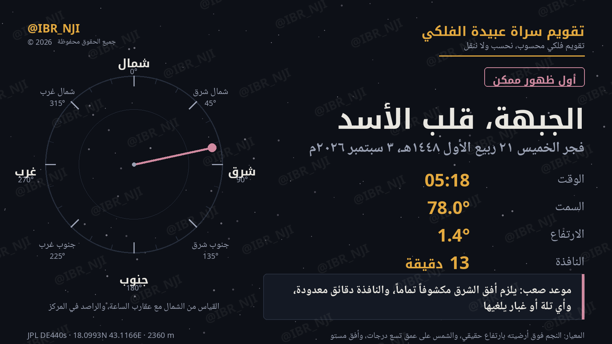

موعد صعب: يلزم أفق الشرق مكشوفاً تماماً، والنافذة دقائق معدودة، وأي تلة أو غبار يلغيها.
المعيار: النجم فوق أرضيته بارتفاع حقيقي، والشمس على عمق تسع درجات، وأفق مستو
قلب الأسد نجمُ منزلة الجبهة، وأول ظهورٍ ممكن له من سراة عبيدة فجرَ ٣ سبتمبر على ١٫٤° — موعدٌ للمتخصص، نافذته اثنتا عشرة دقيقة ويلزمه شرقٌ مكشوف. وهو ثاني موعدٍ مؤرَّخ نضعه بعد سهيل.
